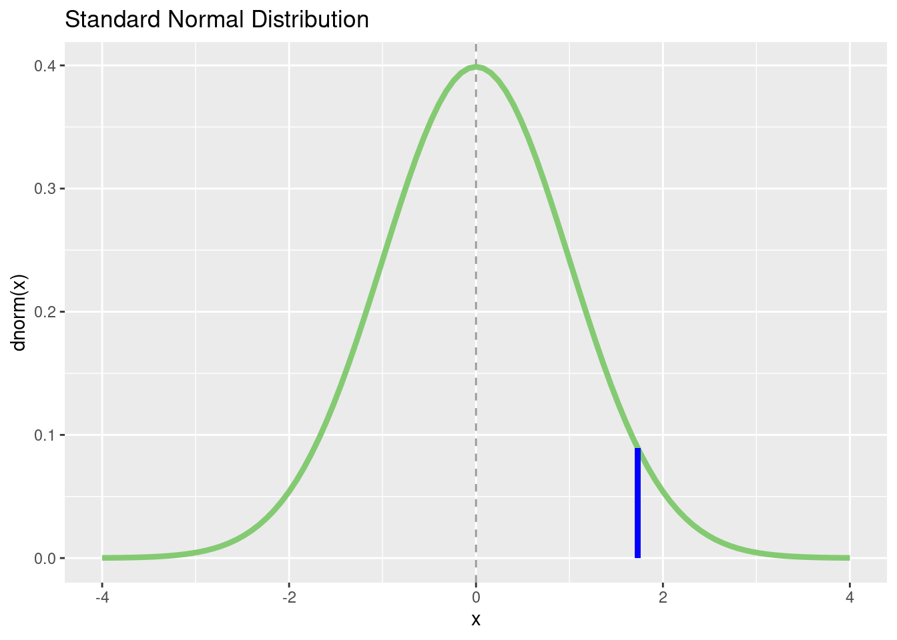

pnorm(q = -1.73)[1] 0.04181514R provides a very simple and effective way of calculating distribution characteristics for a number of distributions (we only present part of it here).
We will introduce the different statistical functions using the normal distribution and then look at other distributions. If you want an overview of the normal distribution, you can help("Normal").
The distribution function pnorm() is needed to calculate p-values. The simplest case concerns the left tail (one-tailed) \(p\)-value for a given standard-normally distributed empirical z score.
Example:
The \(p\)-value for a one-tailed (left-tailed) significance test for z = -1.73 is 0.042.
If we need a right-tailed p-value (area to the right of a certain empirical z-score) we use the argument lower.tail = FALSE.
The value of 1.645 of the standard normal distribution is often used as a critical value for the one-tailed significance test. So to left of this value should be 95% of the distribution and to the right of it 5% of the distribution. Here we see that this is not exactly true.
For a two-tailed p-value we’ll have to double the one-tailed p-value:
We can also use pnorm() to get the percentiles of a series of normally distributed values. For example, we want to know which percentiles correspond to a set of IQ values:
[1] 0.04151822 0.19306234 0.50000000 0.74750746 0.96902592 0.99744487The IQ scores 74, 87, 100, 110, 128, 142 thus correspond to the percentiles 4.2%, 19.3%, 50%, 74.8%, 96.9%, 99.7% of the IQ distribution.
It is also possible to compute the probability of any interval between two normally distributed scores by subtracting the two respective cumulative distribution functions.
The quantile function qnorm() is the complement to the distribution function. It is also called inverse cumulative distribution function (ICDF). With qnorm() we obtain a z-score (i.e., a quantile of the standard normal distribution) for a given area \(p\) representing the first argument of the function. In practice, we often need this function to calculate critical values for a given \(\alpha\)-level for one-tailed and two-tailed significance tests.
The most frequently used z quantiles for \(\alpha=0.01\) and \(\alpha=0.05\) include:
We can use the quantile function also more generally, e.g., for the deciles of the IQ distribution:
[1] -Inf 80.77673 87.37568 92.13399 96.19979 100.00000 103.80021
[8] 107.86601 112.62432 119.22327 InfWith an IQ of just under 120, you thus belong to the smartest 10% of the population!
We actually rarely need the probability density function (PDF) of a normally distributed score. As a reminder: the probability of individual values of a continuous random variable is 0, only intervals of values have a probability greater than 0 (corresponding to the area under the curve, the integral). Individual values have a probability density, which corresponds to the “height” of the the probability distribution at the point \(X = x\). Thus, we need the probability density function if we want to plot a normal distribution.
Before we start plotting, let’s have a look at the definition of the probability density function of the standard normal distribution:
\[ f(x) = \frac{1}{\sigma\sqrt{2\pi}} \exp\left( -\frac{1}{2}\left(\frac{x-\mu}{\sigma}\right)^{\!2}\,\right) \]
The density for the mean (\(\mu = 0\)) is therefore:
\[ \phi(z) = \frac{1}{\sqrt{2\pi e^{0^2}}} = \frac{1}{\sqrt{2\pi}} \]
which should be the same as:
We then get the probability density function for \(z=1\):
\[ \phi(z) = \frac{1}{\sqrt{2\pi e^{1^2}}} = \frac{1}{\sqrt{2\pi e}} \]
which should be the same as:
We can also draw a certain z score in the diagram and let us calculate a p-value for this with pnorm():
my_z <- 1.73
p_value <- round(pnorm(my_z, lower.tail = FALSE), 3)
# reuse the plot from above
p + geom_segment(
aes(
x = my_z,
y = 0,
xend = my_z,
yend = (dnorm(my_z))
),
color = "grey70",
size = 1.5,
alpha = 0.8
)Warning: Using `size` aesthetic for lines was deprecated in ggplot2 3.4.0.
ℹ Please use `linewidth` instead.
With rnorm(), we can generate normally distributed pseudo-random numbers. It is a pseudo-random number generator because the function only simulates randomness. An actual random number generator is a bit complicated and can not be easily implemented using a deterministic computer. The advantage of the pseudo-random generator is that we can get a reproducible “random” draw using the seed value function. set.seed() starts the draw algorithm at a specific location, so that the same starting numbers always return the same “random” numbers.
Let’s generate 22 IQ scores:
[1] 108.78293 110.64199 98.36045 93.19754 109.08831 72.73066 109.45148
[8] 95.85724 95.73760 86.21017 98.25628 127.25968 105.55942 107.80325
[15] 88.74202 112.25350 86.70464 95.02634 116.81069 104.48086 111.69433
[22] 121.83678Check some summary statistics:
t DistributionThe function arguments for the t distribution are the same as for the normal distribution with the following differences: The degrees of freedom (df) of the t distribution must be specified. The arguments mean and sd are omitted, but there is the non-centrality parameter ncp. This is needed (as the name suggests) for non-central t distributions that do not have a mean of 0. While the central t distribution (with \(\mu=0\)) is symmetric and corresponds to the \(H_0\) distribution required for t tests, the non-central t distributions (\(H_1\) distributions) are asymmetric and required for power analysis. We will not look at these distributions here, so we will not use the ncp argument.
Example for a one-tailed (left-tailed) \(p\)-value:
Example for a one-tailed (right-tailed) p-value
For a two-tailed significance test we would need to double the one-tailed p-value:
or:
With qt() we get a t score for a given area \(p\). In most t distribution tables, only specific t quantiles are tabulated, but we can calculate quantiles for arbitrary quantiles. Let’s get some quantiles for a t-distribution with \(df = 6\):
Let’s plot a t distribution:
p <- tibble(x = c(-4, 4)) %>%
ggplot(aes(x = x))
p + stat_function(
fun = dt,
args = list(df = 6),
color = "#84CA72",
linewidth = 1.5
) +
ggtitle("Central t-Distribution (df = 6)") +
xlab("x") +
ylab("dt(x, df = 6)")p <- tibble(x = c(-4, 4)) %>%
ggplot(aes(x = x))
p + stat_function(
fun = dt,
args = list(df = 6),
color = "#84CA72",
linewidth = 1.5
) +
stat_function(fun = dnorm,
color = "grey70",
size = 1.5) +
ggtitle("Central t-Distribution (df = 6) compared to z-Distribution") +
xlab("x") +
ylab("dt(x, 6) / dnorm(x)")For the \(\chi^2\) distribution (help ("chisquare")) the functionality is the same as for the t distribution. The respective degrees of freedom must be specified and there are also non-central distributions, which we will not consider further. The functions are called pchisq() (cumulative distribution function), qchisq() (quantile function), dchisq() (density function) and rchisq() (random generation of \(\chi^2\)-distributed scores).
When calculating \(p\)-values for the \(\chi^2\) distribution, in most cases only the upper (right) end of the distribution is needed. This is because most statistical tests are designed in such a way that all deviations from \(H_0\) (no matter in which direction) lead to a larger \(\chi^2\) value (that’s why these tests always test a non-directional hypothesis, and the \(p\)-value therefore corresponds to a two-tailed test). Thus, we always use the argument lower.tail = FALSE to calculate \(p\)-values for \(\chi^2\) distributions.
Example for a p-value for \(\chi^2(2)=4.56\):
With qchisq() we obtain the quantiles of the \(\chi^2\) distribution, e.g. the critical values for \(\alpha=0.05\). Some statisticians are very proud to know the critical values for the 1, 2, 3, 4, and 5 degrees of freedom of the chi-square distributions by heart, because these are often needed for model comparisons via likelihood ratio tests.
Again, we can use the probability density function dchisq() to plot one or more \(\chi^2\) distributions:
p <- tibble(x = c(0, 25)) %>%
ggplot(aes(x = x))
p + stat_function(
fun = dchisq,
args = list(df = 2),
color = "#84CA72",
linewidth = 1.5
) +
stat_function(
fun = dchisq,
args = list(df = 4),
color = "grey70",
size = 1.5
) +
stat_function(
fun = dchisq,
args = list(df = 8),
color = "blue",
size = 1.5,
alpha = 0.7
) +
stat_function(
fun = dchisq,
args = list(df = 14),
color = "red",
size = 1.5,
alpha = 0.7
) +
ggtitle("Chi-Square Distributions with dfs = 2, 4, 8, and 14") +
xlab("x") +
ylab("dchisq(x, c(2, 4, 8, 14))")With rchisq() we can generate \(\chi^2\)-distributed random numbers. The functionality is the same as for the other distributions.
For the \(F\) distribution (help ("FDist")), the same rules apply as for the \(\chi^2\) distribution and for the t distribution. We have to specify both numerator degrees of freedom (df1) and denominator degrees of freedom (df2). The functions are pf() (cumulative distribution function), qf() (quantile function), df() (probability density function), and rf() (random generation of \(F\) distributed scores).
When calculating \(p\)-values for the \(F\) distribution, in most cases only the upper (right) end of the distribution is needed (as with the \(\chi^2\) distribution). We therefore always use the argument lower.tail = FALSE to calculate \(p\)-values. Probably the most typical application for the \(F\) test is the one-factorial analysis of variance (ANOVA). Here we test whether there are any significant differences in the mean values between several groups. All deviations from \(H_0\) lead to a larger SSQbetween and thus to a higher empirical \(F\)-statistic. That’s also why we consider the entire \(\alpha\) at the upper end of the distribution when computing critical \(F\) scores (see below “Quantile Function”).
Example for a \(p\)-value for \(F = 3.89 (df1 = 2, df2 = 40)\):
If we compute an ANOVA by hand (please don’t), \(F\) distribution tables often do not contain all combinations of degrees of freedoms. With qf() we can obtain the quantiles of the \(F\) distribution for arbitrary values.
Let’s caluclate the critical values for \(alpha0.05\), and \(\alpha=0.01\) for an \(F\) distribution with \(df1 = 2\) and \(df2 = 40\):
Let’s plot some \(F\) distributions using df():
p <- tibble(x = c(0, 5)) %>%
ggplot(aes(x = x)) +
stat_function(
fun = df,
args = list(df1 = 2, df2 = 40),
color = "#84CA72",
linewidth = 1.5
) +
stat_function(
fun = df,
args = list(df1 = 5, df2 = 80),
color = "grey70",
size = 1.5
) +
stat_function(
fun = df,
args = list(df1 = 8, df2 = 120),
color = "blue",
size = 1.5,
alpha = 0.7
) +
ggtitle("F-Distributions with df1 = 2, 5, 8 and df2 = 40, 80, 120") +
xlab("x") +
ylab("df(x, c(2, 5, 8), c(40, 80, 120))")With rf() we can generate \(F\) distributed random numbers. The functionality is the same as for the other distributions.
There are many statistical distributions available in R. Each has the same functionality as we have seen above. Here is a table in case you are wondering what some of the distributions are and/or what the associated function names are.
| Distribution | Functions | |||
|---|---|---|---|---|
| Beta | pbeta | qbeta | dbeta | rbeta |
| Binomial | pbinom | qbinom | dbinom | rbinom |
| Cauchy | pcauchy | qcauchy | dcauchy | rcauchy |
| Chi-Square | pchisq | qchisq | dchisq | rchisq |
| Exponential | pexp | qexp | dexp | rexp |
| F | pf | qf | df | rf |
| Gamma | pgamma | qgamma | dgamma | rgamma |
| Geometric | pgeom | qgeom | dgeom | rgeom |
| Hypergeometric | phyper | qhyper | dhyper | rhyper |
| Logistic | plogis | qlogis | dlogis | rlogis |
| Log Normal | plnorm | qlnorm | dlnorm | rlnorm |
| Negative Binomial | pnbinom | qnbinom | dnbinom | rnbinom |
| Normal | pnorm | qnorm | dnorm | rnorm |
| Poisson | ppois | qpois | dpois | rpois |
| Student t | pt | qt | dt | rt |
| Studentized Range | ptukey | qtukey | dtukey | rtukey |
| Uniform | punif | qunif | dunif | runif |
| Weibull | pweibull | qweibull | dweibull | rweibull |
| Wilcoxon Rank Sum Statistic | pwilcox | qwilcox | dwilcox | rwilcox |
| Wilcoxon Signed Rank Statistic | psignrank | qsignrank | dsignrank | rsignrank |